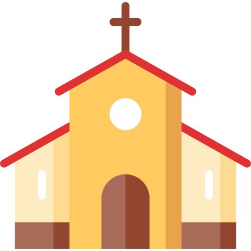

 UROCZYSTOŚĆ ZAŚLUBIN
Zapraszamy serdecznie wszystkie bliskie nam osoby na Mszę Świętą, w trakcie której przyjmiemy Sakrament Małżeństwa.
31. lipca 2021
 16:30
16:30
 Parafia św. Józefa Robotnika w Kielcach
Parafia św. Józefa Robotnika w Kielcach
 PRZYJĘCIE WESELNE
PRZYJĘCIE WESELNE
Aby podzielić się naszą radością z zawarcia Związku Małżeńskiego, zapraszamy naszych gości weselnych na bal do białego rana :)
Dworek Binkowski w Kielcach
Dodatkowe informacje dla gości weselnych:
- Pierwsza informacja
- Druga informacja
- Trzecia informacja